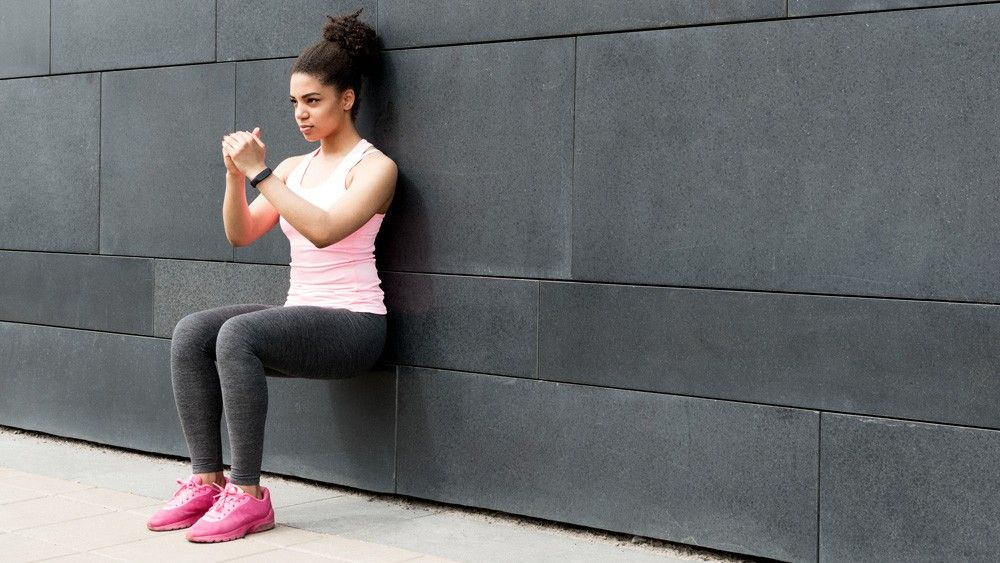

EXERCISE BLOG
- Wall sit 
- Slowly slide your back down a wall until your thighs are parallel to the floor.
- Make sure your knees are directly above your ankles and keep your back straight.
- Go for 60 seconds per set.
- Bicycle
- Lie faceup with your knees bent and your hands behind your head.
- Bring your knees in toward your chest.
- Bring your right elbow toward your left knee as your right leg straightens.
- Continue alternating sides like you’re pedaling a bike.
- Squat
- Stand with your feet parallel or turned out 15 degrees — whatever is most comfortable.
- Slowly start to crouch by bending your hips and knees until your thighs are at least parallel to the floor.
- Make sure your heels do not rise off the floor.
- Press through your heels to return to a standing position.
- Plank to push-up
- Start in a plank position.
- Place one hand at a time on the floor to lift into a push-up position with your back straight and core engaged.
- Move one arm at a time back into the plank position (forearms on the floor).
- Repeat, alternating your arm that makes the first move.
- Calf raise
- From a standing position, slowly rise up on your toes, keeping your knees straight and heels off the floor.
- Hold briefly, then come back down.
- Aaaand repeat.
- Try standing on something elevated (like a step) to achieve a wider range of motion.
- Handstand push-up
- Get set in a handstand position against a wall.
- Bend your elbows at a 90-degree angle, doing an upside-down push-up so your head moves toward the floor and your legs remain against the wall.
- First-timer? Grab a friend to spot you — safety first!
- Shoulder bridge
- Lie faceup with your knees bent and your feet hip-width apart.
- Place your arms at your sides and lift your spine and hips. Only your head, feet, arms, and shoulders should be on the floor.
- Lift one leg, keeping your core tight.
- Slowly bring your leg back down, then lift back up.
- Try to do 10 reps per leg, then lower your spine back onto the floor.